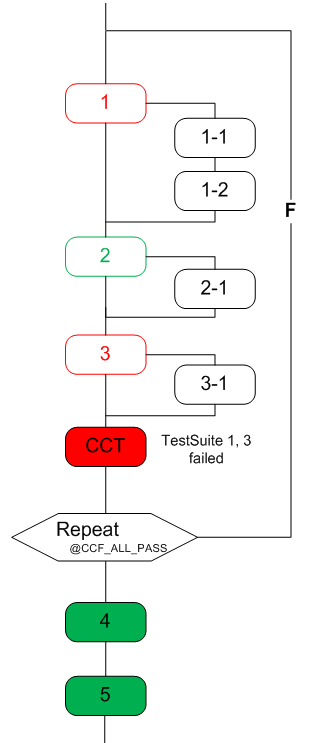

How to handle the fail branch with concurrent test framework
The extended template CCTestMethodEx, the function setCCExecuteStatus() and the testflow variable CCF_AllTestPass are provided to handle the fail branch in the concurrent test framework.
About this task
This is used to execute the fail branch in the CCF block when some native test suites failed in the concurrent execution.
Procedure
- Create all the test methods for this CCF block with the extended template CCTestMethodEx.
- In the process() function of each test method, judge the test result and use setCCExecuteStatus() to notify CCF the result.
- Create a testflow variable CCF_AllTestPass and set its value to 1.
- In the testflow, insert a Repeat Loop node and set the condition as @CCF_AllTestPass and increment as 0.
-
In the Repeat Loop, insert the test suites for this CCF block. All these test suites call
the test methods created based on the template CCTestMethodEx except the CCF execution test
suite which calls the test method
ccf_tml.CCFExecutionEx.
Results
The CCF block that can handle the fail branch of the native test suites is created. If some test suites failed in the concurrent execution, their fail branch will be run serially and immediately..
Example
In the following example, the test suite 1, 2 and 3 are concurrently executed in the first round. The test suite 1 and 3 failed, and then 1-1, 1-2 and 3-1 in fail branch will be serially executed.

Functional changes
- Introduced in SmarTest 7.3.1